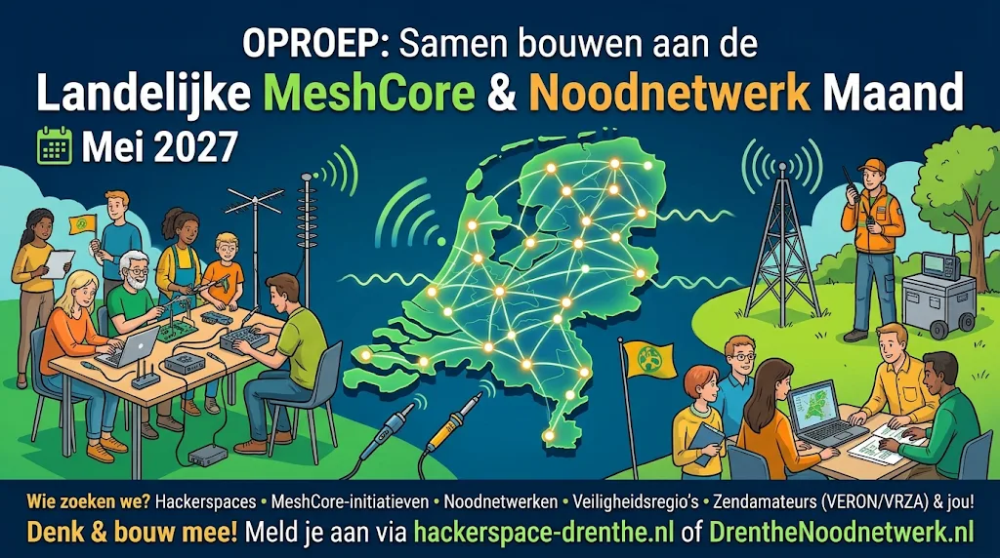

In mei 2026 organiseerden we vanuit Hackerspace Drenthe en Drenthe Noodnetwerk de MeshCore Maand. We hebben er veel plezier aan beleefd en wat ons betreft was het een groot succes. Dat smaakt naar meer. In mei 2027 organiseren we weer een MeshCore Maand in Drenthe. Hoe mooi zou het zijn als er die maand in heel Nederland wordt gebouwd, getest en geleerd?
Het idee: heel Nederland verbonden
Door lokale en landelijke initiatieven samen te brengen, kunnen we van mei dé maand maken voor off-grid communicatie, noodnetwerken en mesh-technologie. Als we de activiteiten samen plannen, kunnen we:
- Op verschillende plekken in Nederland activiteiten organiseren waar nieuwsgierige beginners en ervaren bouwers samen kunnen knutselen, testen en leren.
- Samen meer mensen bereiken en meer media-aandacht krijgen dan ieder voor zich.
- Laten zien wat burgerinitiatieven kunnen bijdragen aan communicatie als reguliere verbindingen uitvallen.
Wie zoeken we?
- Hackerspaces in heel Nederland
- Bestaande MeshCore-initiatieven
- Lokale en regionale noodnetwerkinitiatieven
- Veiligheidsregio’s
- Lokale VERON-afdelingen en andere zendamateurverenigingen
- Iedereen die geïnteresseerd is en wil meehelpen: particulieren, scholen, overheden, bedrijven, hobbyclubs en andere organisaties.
Doe je mee? Meedenkers gezocht!
Voor de landelijke editie is nog niets geregeld. Er ligt nog geen vast plan of programma. Dit is een idee en een open uitnodiging om samen te bepalen wat mogelijk is.
Wil je meedenken, een activiteit in jouw regio organiseren of helpen met de landelijke coördinatie en PR? Mail Rein via rein@hackerspace-drenthe.nl. Vertel ons uit welke regio je komt en wat je graag zou willen doen/waar jullie goed in zijn.